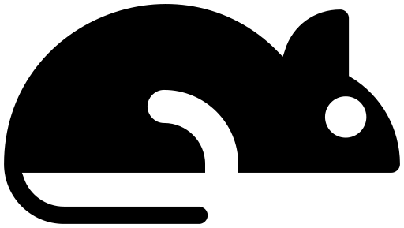

You remember the old Snake game? This is not that. This is a re-imagined version. Snaky the main character lost his job and got drunk. While driving, he was stopped by two cops but he escaped , but in the process, he lost part of his body and now he is just a head. Thanks to his super-power he can re-grow his limb after eating 1000 rats every 100 rats he re-grows 10% of his body. Since he is drunk Sneaky doesn't what he is eating so watch out for these rats. Move by using WASD or the Arrow Keys
Welcome to the Snake Escape game
Read instruction before playing

Normal rat, good to eat. Will heal you
This rat died eating LSD, eating it will speed up the game
This rat died eating weed, eating it will slow down the game
This rat died eating LSD and Xanax and Adderall, eating it will speed up the game